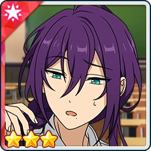
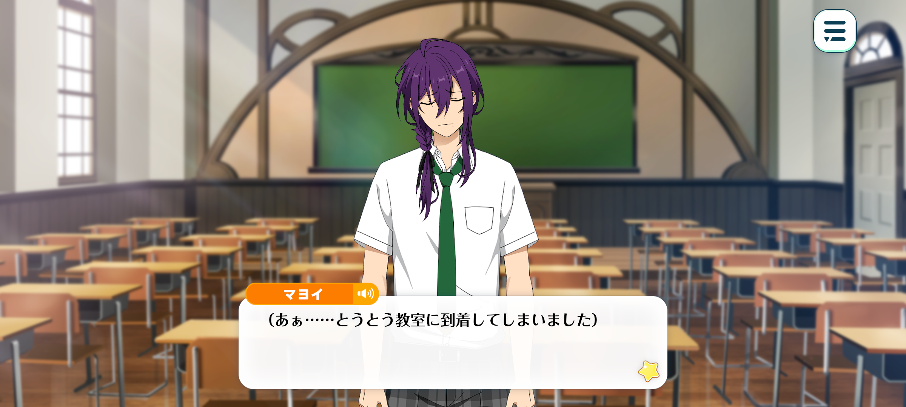
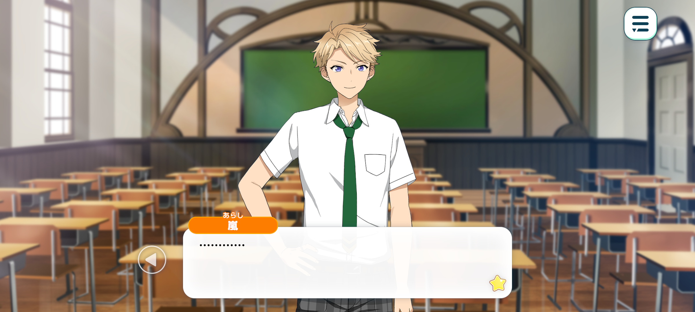
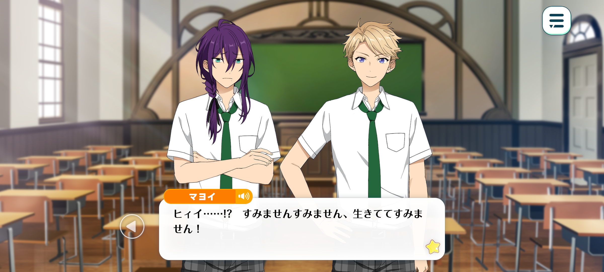
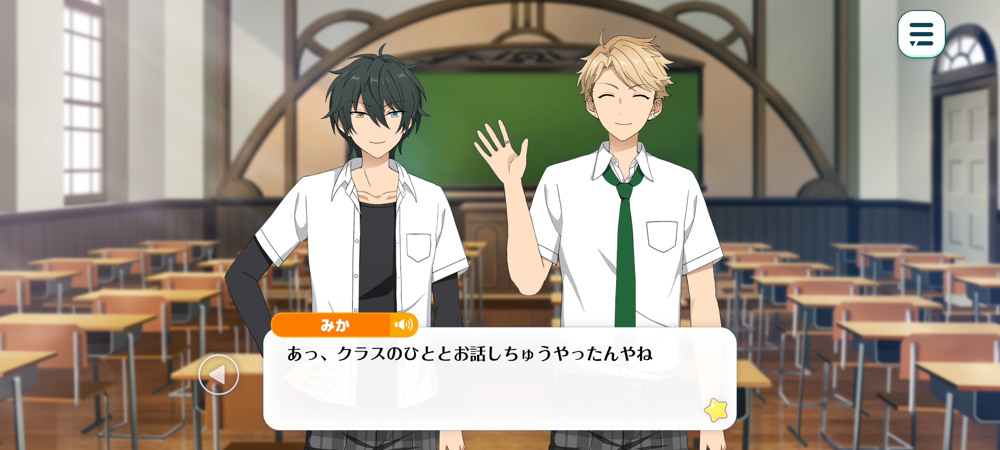
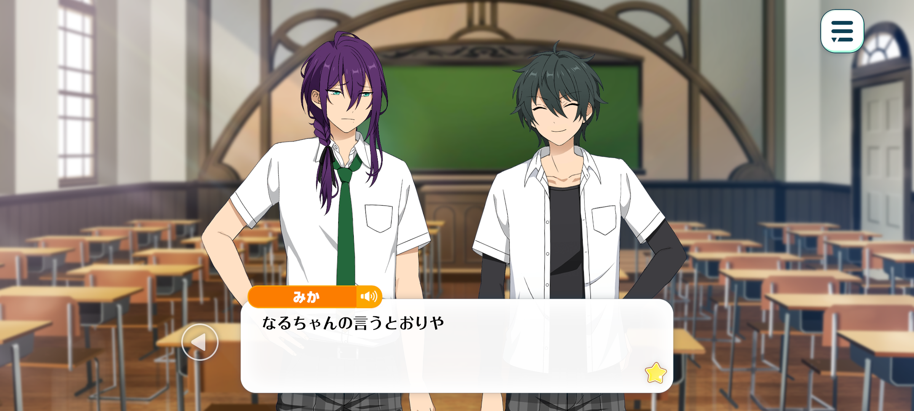

Open The Door
Idol Story


Mayoi: (Ah… I've finally made it to the classroom.)
(Since the MDM ended, the other members of ALKALOID have gradually started coming back to school. Aira-san was getting worried because I'm the only one who still hasn't been attending classes...)
(I felt terrible knowing I'd made someone like Aira-san worry about a good-for-nothing like me, so I finally worked up the courage to come to class... but...)
(There's no way someone like me could possibly fit in among all these dazzling idols...)
...?
(I feel like someone's staring at me...?)
(But who would even bother looking at someone like me...?)

Arashi: ...
Mayoi: (Narukami-san...? No, no. Someone as popular and radiant as her would never pay any attention to someone like me. You’re just being paranoid, Mayoi!)
(Ah... I wish I could just disappear. Maybe I should hide under a desk...)
(Someone like me belongs in the crawlspace above the ceiling, not in a classroom... But I can't keep making Aira-san worry about me, either...)
...
(I really do need to start attending classes properly... Uuuh, I can't stop shaking, but... I'll just tell myself these are the tremors of excitement before a great battle...!)
Time: Lunchtime

Mayoi: (Haa... I've finally made it through the morning lessons. At least during lunch break, I'd like to sneak out of the classroom so nobody has to look at me...)
Arashi: Wait up, Mayoi-chan.
Mayoi: Eeeek…!? I'm sorry, I'm sorry! I'm sorry for being alive!
Arashi: Oh my, did I give you a fright? I'm sorry~
Mayoi: N-no, you didn’t…
Arashi: If you don't have any plans for lunch, do you think I could speak with you for a sec?
Mayoi: Eeh!? M-me? Are you sure you’ve not got the wrong person…….?
Arashi: Fufu, I’m sure. There's just something I'd like to ask you.
Mayoi: Ahhh! I'm so sorry for daring to enter your line of sight, Narukami-san!
Arashi: Umm... I wasn't expecting you to apologise. Do I really look that scary?
I just wanted to ask you something about your hair!
Mayoi: Hair…? My hair?
Arashi: Yup! It's so long and beautiful. couldn't help admiring it~ That's why I wanted to ask what you do to take care of it!
Mayoi: But it’s not— M-my hair isn’t anything special. It's just long, that's all…
Arashi: You don't have to be so modest. It's gorgeous! Long and silky, without a single piece out of place!
Mayoi: T-that's far too much praise for someone like me…
Arashi: …? Oh my, Mayoi-chan
Mayoi: Eeek!?
Arashi: Your skin is lovely, too ♪ Do you take really good care of yourself?
Mayoi: Aahwaaa…
Arashi: ...Oh, I'm sorry! I got a little carried away and started inspecting you, didn't I...?
You see, TV cameras are so high-definition these days, aren't they?
And because of that, I've become even more conscious of things like my skin and hair lately. Whenever I notice someone with something lovely, I just can't help asking them about their beauty routine!
Mayoi: I-I see... If there's anything someone like me can do to help, please feel free to inspect me as much as you like...
Arashi: Thanks~♪ You're such a sweetheart, Mayoi-chan~!
I feel a teensy bit guilty about taking advantage of your kindness, but... would you mind telling me if there's anything you do to keep your skin so fair?
Mayoi: It’s only because I’m a shut in…
Arashi: Ufufu, don't call yourself a shut-in! You gave us such a wonderful performance at MDM, didn't you?
Mayoi: Uh… I-I'd say that's a different matter altogether…
???: Heyyy, Naru-chan
Mayoi: ...Eek!
Arashi: Oh, Mika-chan ♪ Come on over.

Mika: Oh, you're talkin’ to someone from our class.
Arashi: Mhmm. Did you come to invite me to lunch?
Mika: Yeah, I did. Sorry forinterruptin' you two though.
Arashi: Oh, don't be silly! I'd never think of you as a bother, Mika-chan.
Mika: But you've been talkin' with this guy from ALKALOID. Looks like you've gotten pretty buddy-buddy in just a couple of minutes.
Mayoi: T-To say that Narukami-san and I are friends would be far too presumptuous...
Arashi: It makes me a little sad to hear you say that, you know~? Since we're all here, I thought you might like to have lunch with us, Mayoi-chan.
Mayoi: Eeeak!? With s-someone like me…?!
Mika: Well then, it’ll be the three of us gettin’ lunch today. Nice t’meet ya, ALKALOID’s… uhh, Ayase-kun?
Mika: …Speakin’ of which. Naru-chan once invited me to have lunch with her when I was all by myself. That brings back memories~
‘m sorry I can’t hold a conversation as well as Naru-chan can… but I hope you won't mind, okay?
Arashi: I have a feeling you two are going to become fast friends~.
Mayoi: Uu... The two of you are so kind-hearted, welcoming someone like me into your little circle of friends...! I truly admire your generosity...!
Arashi: Oh, you're making it sound like such a big deal. I just want to get to know you better, Mayoi-chan.
So really, I'm just being a little selfish. And of course, if you don't feel like it, you can always say no...
But let me give you a proper invitation, then. How about the three of us having lunch together today? We won't know whether we can become friends until we've had a chance to talk, right?
Even Mika-chan and I are really close now, but we were strangers once.

Mayoi: Narukami-san…
Mika: It’s just like what Naru-chan’s sayin’.
I'm not really good at approachin' people I don't know, either. If Naru-chan hadn't come up and talked to me first, we might never have become friends.
Ayase-kun, if you wanna, let’s be friends too.
Mayoi: (Become… friends…? Could something like that really happen…?)
(Just as I can't imagine there being a place for me in this class, in this academy, or even in this world, I can't imagine there being a place for me among these people, either…)
(Ah... And yet, even so, if they're willing to reach out to someone like me...)
U-um… I-I'd be happy to become friends with you, too…!
Arashi: I'm so glad! Well then, we're friends from today onward~! ♪
Mayoi: O-okay…
Arashi: Then it's settled~.
Now then, let’s head over to the Garden Terrace. Lunch is almost over.
Mika: Yer right, we'd better hurry, or break'll be over before we know it.
Mayoi: Fufu, then let’s hurry and go…!